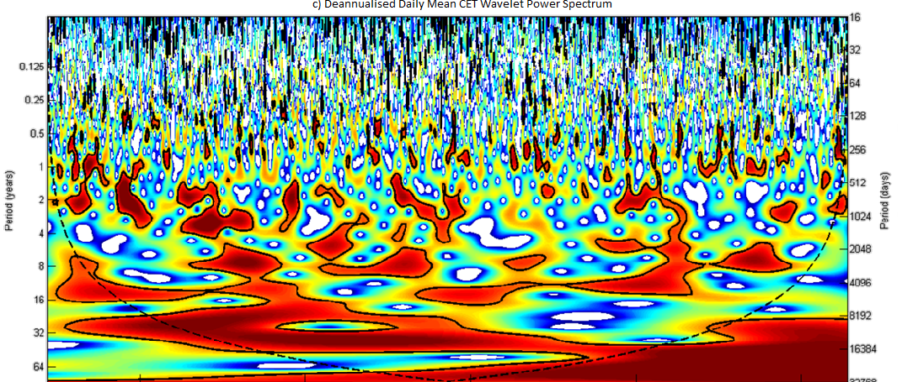
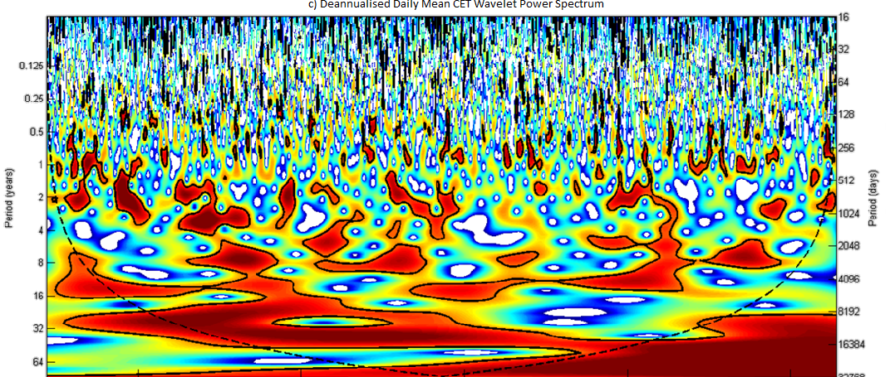

This is one of my favourite photos from my time storm chasing in the USA. This picture was taken in the Texas Panhandle close to sunset, bringing out the orange of the dust kicked up by the storm winds against the dark menace of the storm clouds themselves. With some patience and luck I was able to capture one of the many lightning bolts striking ground. See more photos here
Matt Brown
(He/Him)
Numerical Modeller at UK Centre for Ecology and Hydrology
Coder, data-wrangler, storm chaser, photographer, reader, human
Research
I'm a numerical modeller/data-wrangler at UKCEH. My interests encompass the physics of the natural world, messing around with new technologies/software for data wrangling and modelling, and developing cool products/tools. I have an undergraduate Masters degree in Meteorology from the University of Reading and an MPhil from the University of Oxford.
I mostly use python for my research, particularly the xarray and pandas libraries, alongside dask and object-storage systems for working with larger-than-memory datasets and parallel processing. A lot of my research involves working out how to efficiently process large amounts of data on high-performance computers. I am also familiar with R and FORTRAN having edited various models written in these languages and used wrapper libraries to integrate them with my anaconda setup.
Projects

I'm currently developing a nutrients/water-quality model that is designed to work with any hydrological model using the UNIFHY modelling framework. This is part of the Hydro-JULES project.
For the OpenCLIM project I'm developing a crop suitability model to assess how the changing climate will affect our ability to grow certain crops within the UK.
For the CropNET project I assimilated satelltie observatons of vegetation into crop models to improve their predictions of yield.
For the Future Flows project with Malaysia I developed and delivered a python training course for overseas students. After delivering I adapted it to be an on-demand course.
Developed a decision support tool called TAMSAT-ALERT for countries in Africa using the land surface memory as a basis for drought prediction. It is still actively used and developed by the team I worked with.
Other things I've done

 


I co-developed 'Hot Moths', a dating app for moths, with Simon Rolph to raise awareness of the diversity of moth species and how many are endangered in the UK, as part of a hackathon.
I developed a global ensemble climate-model suite for running the Met Office Unified-Model as part of my Master's project. This involved writing the complicated scripts necessary for managing the workflow of all the climate model tasks.
Webmaster for the OUWC, Oxford University's Hiking Club. I developed an automated ballot for places on trips and managed the club website and email lists.
Treasurer of the Rollercoaster Appreciation Society at the University of Reading
Developed a wavelet analysis of the Central England Temperature index, the longest temperature index in the world.
Co-founder and writer for Evidently Scientifical, an Oxford postgraduate student blog with honest articles on student life, and easily-understandable explanations of the wide-ranging areas of study of the cohort. I wrote non-technical explanations of atmospheric physics concepts I encountered during my degree and storm-chasing.
I was involved in the University of Oxford Physics Department Outreach team. I helped run various outreach activities for primary and secondary schools in Oxfordshire. This included developing presentations and running workshops/hands-on activities in a team.
I spend a lot of time hacking around with Home Assistant, an open-source and collaborative home-automation environment which works across devices independent of brand. For example, I have configured the lights in my room to slowly brighten and move through to a blue colour temperature before my phone alarm rings.
I like dancing, particularly contemporary dance. I'm currently attending an African Contemporary class at the Cental School of Ballet.